Category agnostic prior for non-rigid shape matching
Objective
Hypothesis: We have access to large scale dataset of non-rigid, registered shapes.
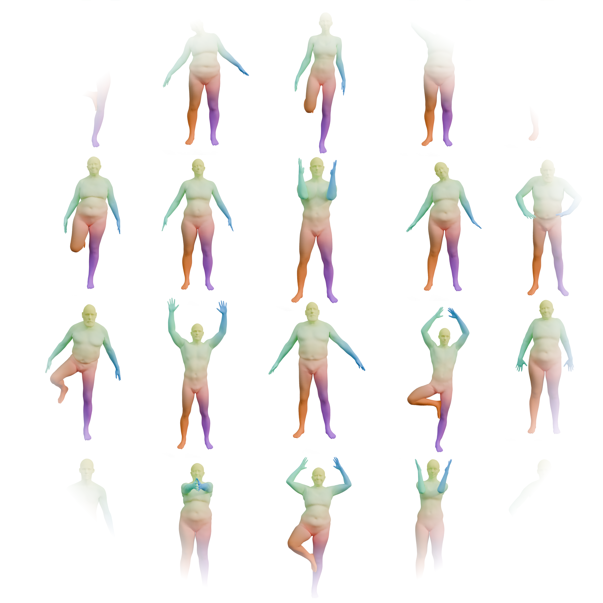
How can we learn to match shapes, without any hypothesis on the category of shapes we want to match?
Related work
Shape deformation
- Learning latent deformations (3D-CODED, BaRe-ESA)
- Add geometric regularization (LIMP, ARAPReg)
- Parameterization agnostic representations (NJF)
- Thomas’ works!!
Problem : The learned deformations are category-specific.
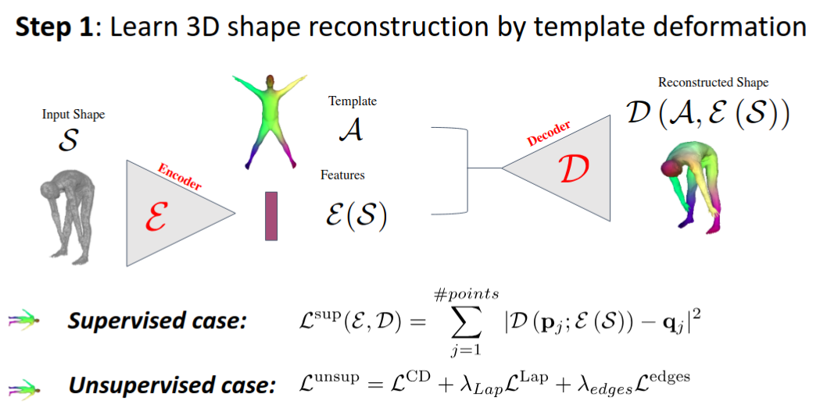
Related work
Shape deformation / shape analysis
- Shape spaces with guaranteed properties
- Add learning to shape models (Bare-ESA)
Problem : Costly optimization, imposes prior to the deformation.
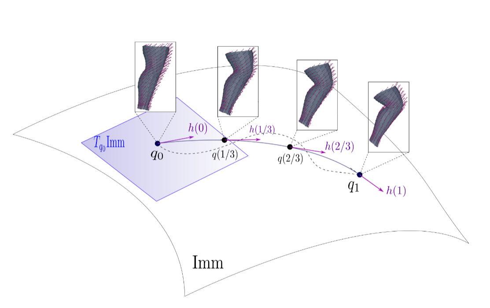
Related work
Shape deformation / shape analysis / shape matching
- Learning shape descriptors
- Use functional maps paradigm to “ease” training
- SOTA on matching benchmarks
Problem : Descriptors are category specific. (Almost) impossible to use in pure optimization.
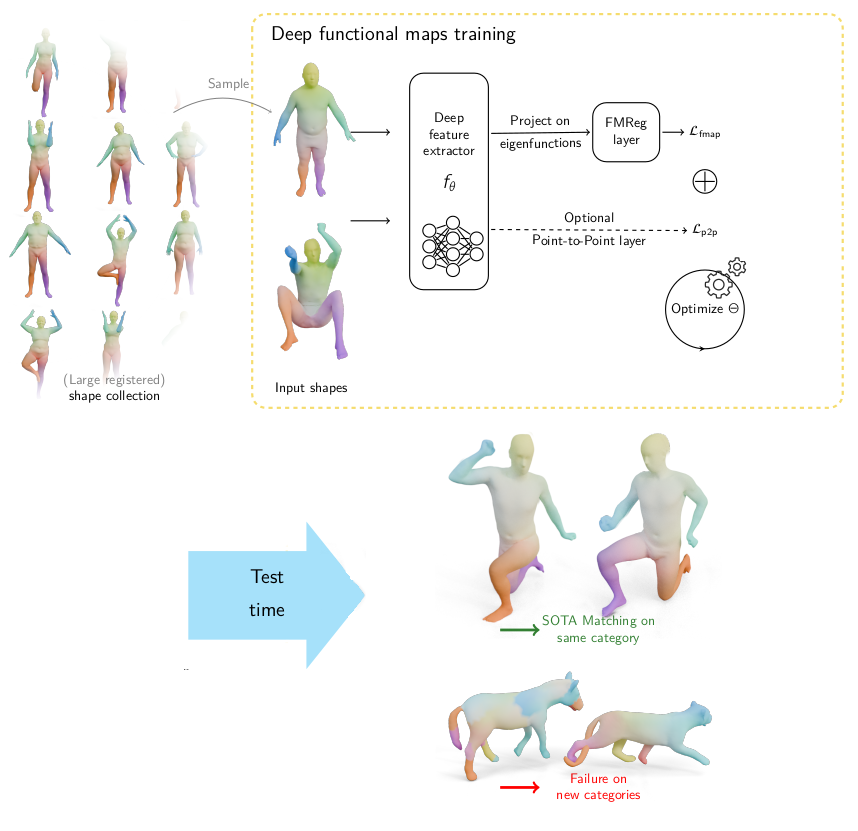
Shape matching with functional maps
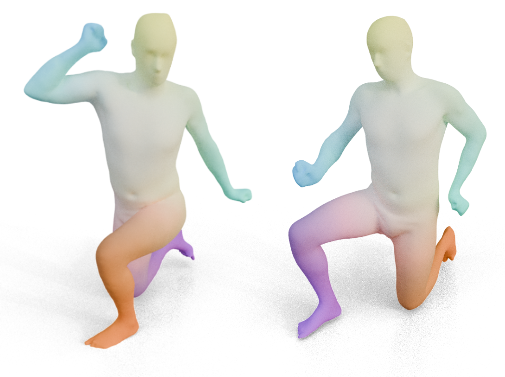
Shape matching with functional maps
Let \(\mathcal{M}\), \(\mathcal{N}\) two shapes. We aim to find a pointwise map \(T : \mathcal{M} \to \mathcal{N}\)
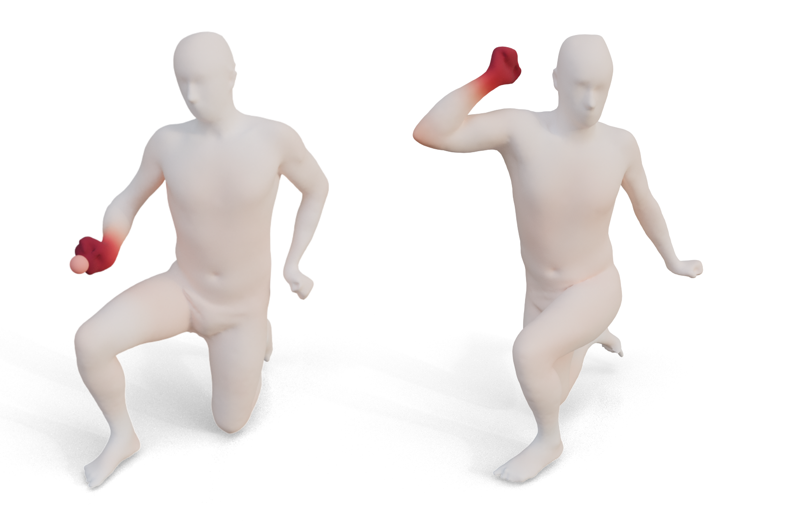
We can also see the pointwise map as a function transfer (here between diracs)
Shape matching with functional maps
The operator \(C: L_2(\mathcal{M}) \mapsto L_2(\mathcal{N})\) is linear!
Shape matching with functional maps
A set of basis functions (Laplace Beltrami eigenfunctions) on \(\mathcal{M}, \mathcal{N}\)
C, represented as a matrix (linear operator) basis function on M and N (note: a mapping matrix \(C\) does not necessarily correspond to a pointwise map).
The pointwise map \(T\) is then extracted from the mapping matrix.
Shape matching with functional maps
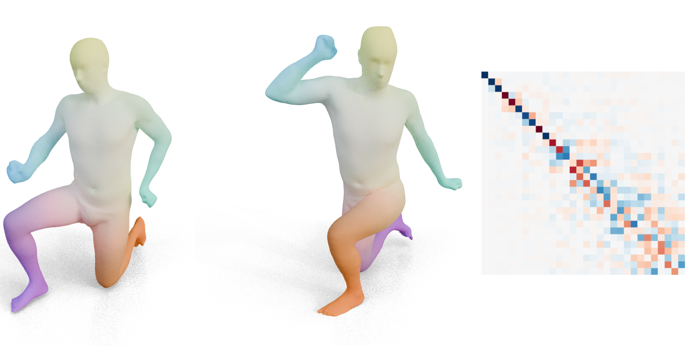
Shape matching with functional maps
We have a set of basis functions of \(\mathcal{M}\), and \(\mathcal{N}\).
We have a set of descriptors functions \(f_i\) on \(\mathcal{M}\) and \(g_j\) on \(\mathcal{N}\) such that \(g(x) \sim f \circ T^{-1} (x)\).
We decompose all \(f_i\) as \(a \in \mathbb{R}^{n \times m}\) and \(g_j\) as \(b \in \mathbb{R}^{n \times m}\). The functional map can be defined as the solution of: \[ C = \underset{C}{\text{argmin}} ||Ca - b||² = \underset{C}{\text{argmin}} \text{ data_loss(C)} \]
In practice, we compute the pointwise descriptors using a neural network. Since the output of the previous equation can be obtained in closed form, we optimize the output \(C\) with respect to the ground truth map \(C_{gt}\) or with axiomatic constraints, allowing to learn the descriptors.
Deep Functional maps regularization terms
- “Maps should be as isometric as possible” (can be incorporated in FMReg layer, key for initialization [NCP, Neurips 2023]):
\[|| M_{\text{LBO}} * C ||^2\]
- “Maps should be volume preserving”:
\[|| C C^T || ^2 \]
- and many others (continuity, orientation, bijectivity, ….)
However, those conditions are not always met in practice.
Deep functional maps
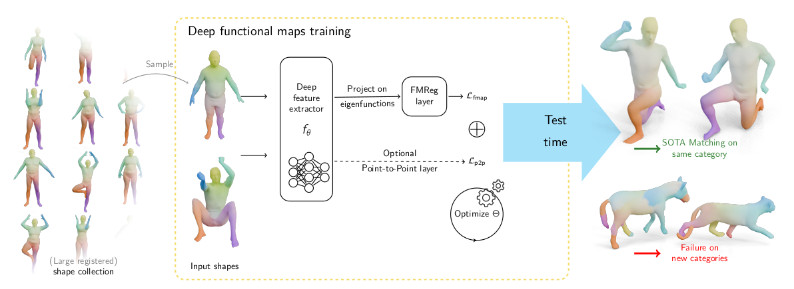
Note: the loss looks like \(\text{ data_loss(C)} + \text{reg_loss(C)}\).
Experiment
Functional maps exhibit similar diagonal structures across humans, animals, and other categories.
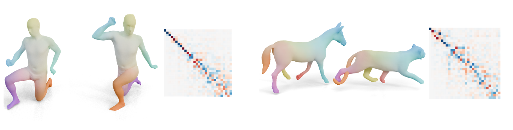
Can we “learn” this structure?
New objective
Hypothesis: We have access to large scale dataset of non-rigid, registered shapes.
How can we learn a prior on functional maps, to regularize deep functional maps, without any hypothesis on the category of shapes we want to match?
Answer: diffusion models!
Diffusion models
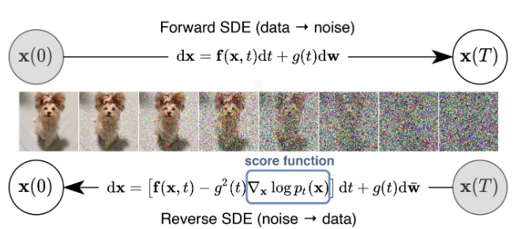
Diffusion models
Forward SDE (\(t: 0 \to 1\)) (data to noise process):
\[dx_t = h_t(x_t) dt+ g_tdw\]
Reverse SDE (\(t: 1 \to 0\)) (generative process):
\[dx_t = \left(h_t(x_t) - g_t^2 \nabla_{x_t} \log p_t(x_t) \right)dt +g_t d\bar{w}\]
\(s(x_t, t) = \nabla_{x_t} \log p_t(x_t)\) is the score function (what we need to estimate). (We can condition the score function \(s(x_t, t, c)\) on any condition \(c\) e.g. text.)
https://yang-song.net/blog/2021/score/
Score function: langevin dynamics
Score function is \(s(x) = \nabla_x \log p(x)\).
By iteratively following the score and adding a little noise, we are generating samples !!

Score matching

Why we need a little more
Out of the data distribution, we don’t need the score. However, it is where the score is the highest!

Denoising score matching:
Perturbed noise distributions
By using different noise scales, we can estimate the score easily out of the data distribution.

Denoising score matching:
Annealed langevin dynamics
We can reproduce a better langevin dynamics by iteratively denoising.

Denoising score matching:
Practical

Diffusion models
In general, learning to denoise the data \(x_t\) is sufficient using a denoiser \(D_\psi(x_t, t)\), minimizing
\[ \mathbb{E}_{x \sim p_{\text{data}}} \mathbb{E}_{n_\sigma \sim \mathcal{N}(0, t^2 I)}|| D_\psi(x + n_t, t) - x ||^2,\]
where \(\psi\) are parameters (neural network weights).
Then, the score function is given by:
\[\nabla_{x_\sigma} \log p({x_\sigma}; \sigma) = (D({x_\sigma}; \sigma) - x)/\sigma^2\]
Diffusion models
Summary
- Noising process, denoising - generative process
- Denoising \(\sim\) following the score using Annealed Langevin dynamics
- Learing the score \(\sim\) learning to denoise
- Learning to denoise \(\sim \sim \sim\) learning the data probability density
Sounds like a good candidate for our task
How can we transfer our knowledge of data probability to downstream tasks?
Score Distillation Sampling
Main idea
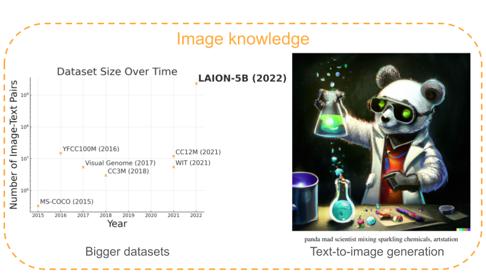
Score Distillation Sampling
Main idea
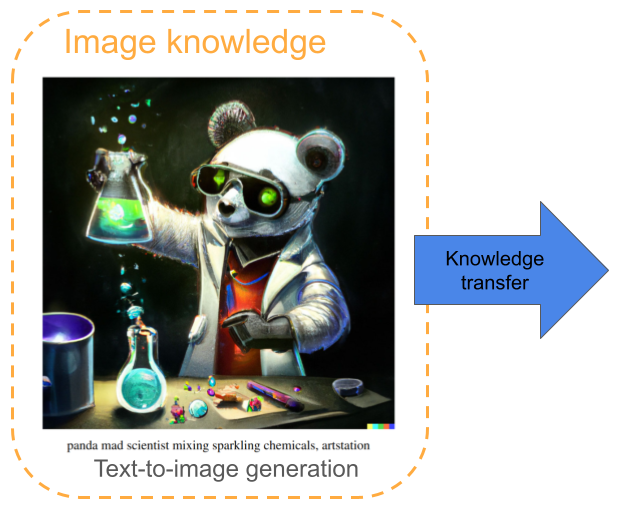
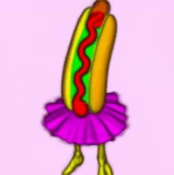
Text-to 3D generation
Score Distillation sampling
Details
We have a source domain (with lots of training data) and a target domain (with not so much training data) such that:
- We have a denoiser \(D_\psi\) on the source domain (easy)
- We have a differentiable representation \(y_\theta\) on the target domain.
- We have a differentiable “source domain extractor” \(g(y_\theta)\) that maps the target domain representation to a source domain representation
We want to sample \(y_\theta\) with the learned denoiser
Score Distillation sampling
Details
This is done by minimizing the loss:
\[ \nabla_\theta \mathcal{L}_{\text{SDS}} = \mathbb{E}_{\sigma, x_t \sim \mathcal{N}(x, t)} [(x_t - D(x_t, t))/t] \frac{\partial g}{\partial \theta},\]
where \(x = g(y_\theta)\).
In the original paper, \(y_\theta\) is the Nerf representation, \(g\) is the differentiable rendering, \(x\) is an image.
Score Distillation sampling
On deep functional maps
Our source domain is functional maps (trained with human registered data) -> we train a Denoiser \(D_\psi(x_t, t)\) on human data functional maps
Our target domain is point-to-point maps
Our differentiable representation is pointwise features of deep functional maps
Our differentiable extractor is functional maps block
We can now transfer functional maps knowledge accross categories with SDS!! Let’s do it
Score Distillation sampling
On deep functional maps
We can now transfer functional maps knowledge accross categories with SDS!! Let’s do it
Diffumatch
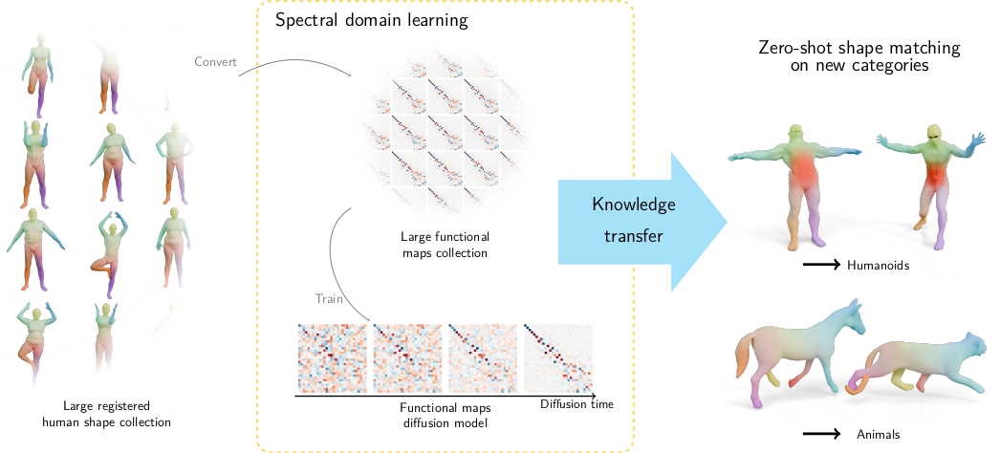
Score Distillation Sampling
“When it sounds too good to be true, very often”
Score Distillation Sampling
“When it sounds too good to be true, very often, it is too good to be true”
Poor results when applying SDS directly
Diffumatch
We just applied SDS as-is, but ignored completely that we are computing functional maps. We have to:
Make sure the initialization is correct (LBO mask?)
Make sure the functional maps correspond to a point-to-point map
Mask computation
We search a mask such that : \[ ||M_t \cdot C_{gt}|| \simeq 0 i.e. \sim \sim p (C_t; t) \propto \text{exp}(-||M_\t \cdot C_t||^2).\]
Under this hypothesis, the score function derives as:
\[\nabla_x \text{log}p(x:\sigma) = -2 M_\sigma^2 \cdot C_\sigma .\] Using the denoiser, we get: \[M_\sigma^2 \cdot C_\sigma = ( C_\sigma - D(C_\sigma; \sigma))/2\sigma^2,\] which reduces as the following formula for computing \(M_\sigma\) (by taking the mean over the noise distribution): \[M_\sigma^2 = \mathbb{E}_{n_\sigma \sim \mathcal{N}(0, \sigma^2 I)}\left[(C_\sigma - D(C_\sigma; \sigma))/(2\sigma^2 C_\sigma) \right].\]
Mask vizualization
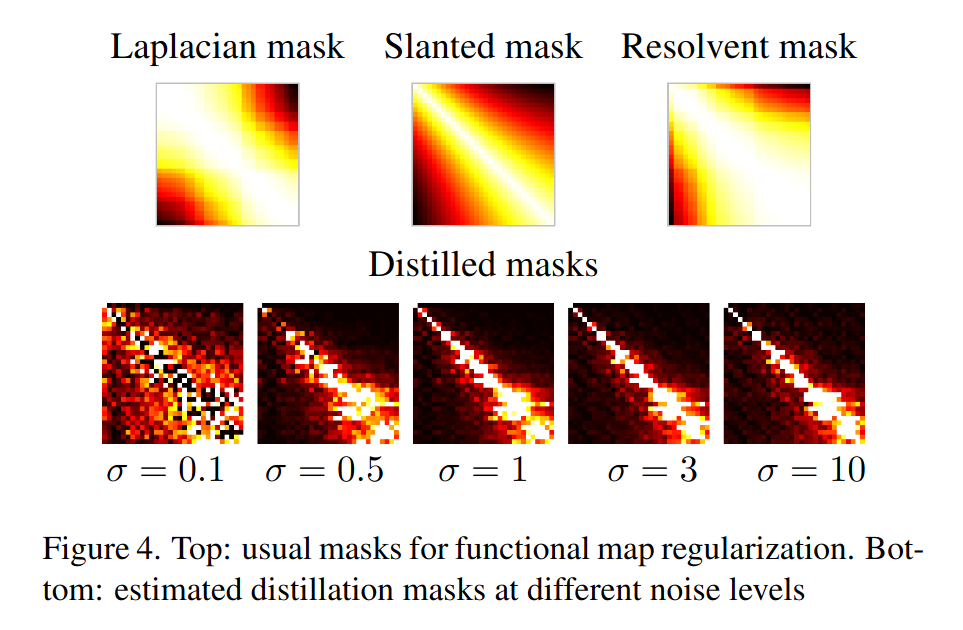
Results
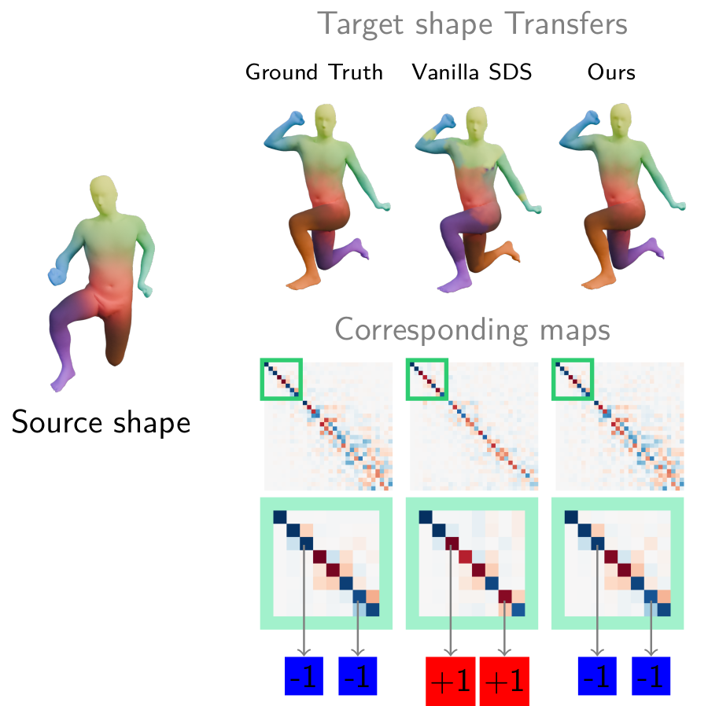
Diffumatch final pipeline
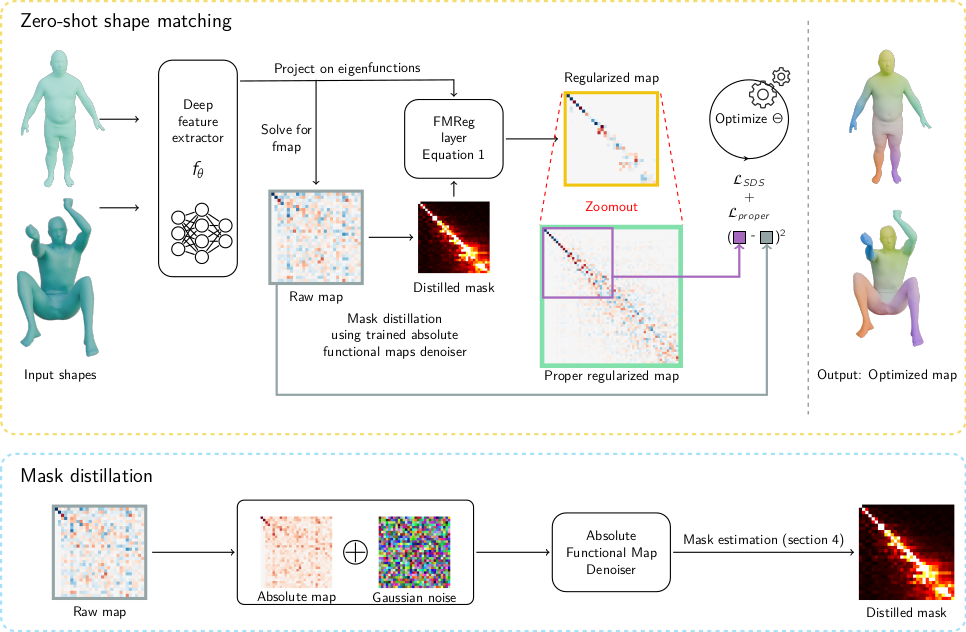
Some results
Generalization
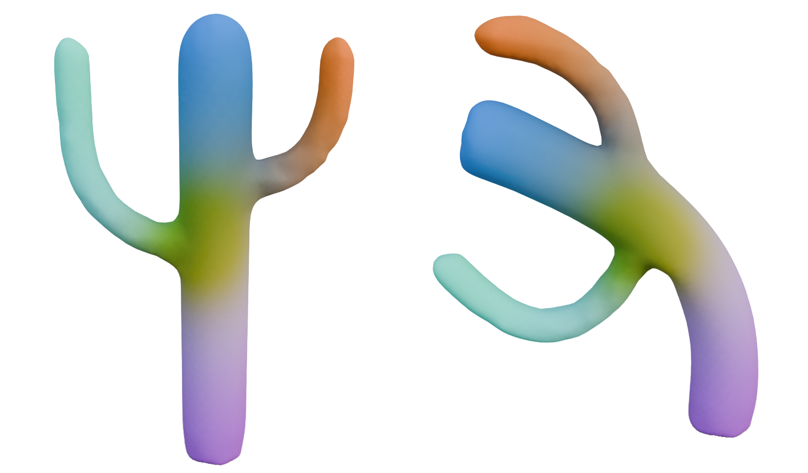
Demo (if it works?)
Limitations
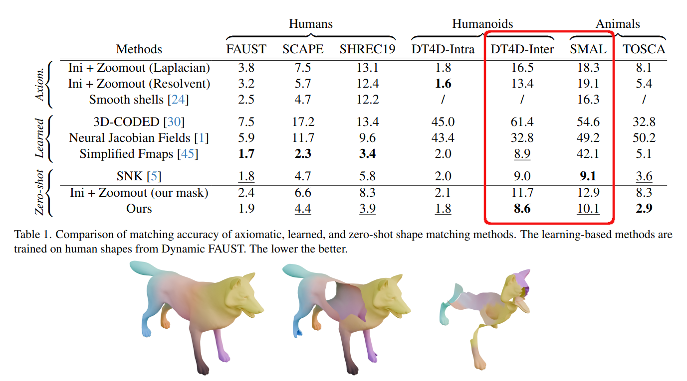
Take-aways
Functional maps, by nature, are good candidate for category agnostic learning
Recent technology (diffusion models, SDS) is important, even for geometry
Applying it to new domains require some domain knowledge
Future works
We only trained our diffusion model on humans. Can we improve the generalization with more data?
Are functional maps really the best candidate?
First potential candidate: Surface general features / distillation from image features.
Second potential candidate: Learn how to deform locally.